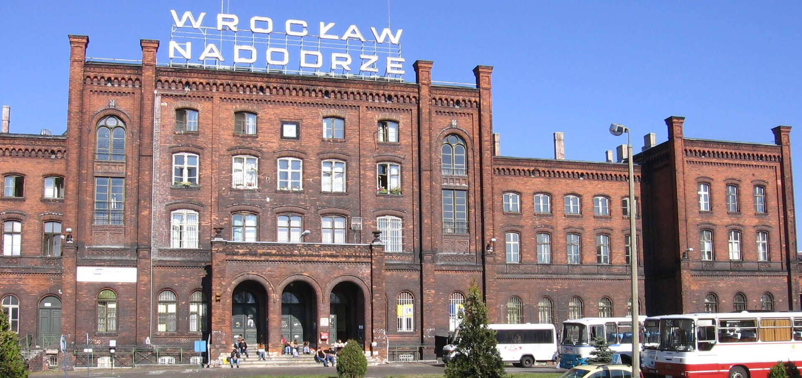

7:00
Żytni na zakwasie
14 zł · 800 g
Piekarnia na zakwasie przy Jedności Narodowej 77, na Nadodrzu. Żytni o siódmej, drożdżówki o dziesiątej, ostatnia blacha o 17:30.
Co jest teraz w piecuTeraz w piecu
Żytni na zakwasie
Wyjdzie o 7:00
Każdy chleb ma swoją godzinę. Bochenek wypełnia się skórką, kiedy blacha wychodzi z pieca. Rozkład liczy się według godziny na Twoim telefonie.
7:00
Żytni na zakwasie
14 zł · 800 g
8:30
Pszenno-żytni
16 zł · 750 g
10:00
Drożdżówki z kruszonką i wiśnią
7–8 zł
12:00
Orkiszowy
18 zł · 700 g
14:00
Żytni ze słonecznikiem
16 zł · 800 g
15:30
Bagietki
7 zł
17:30
Chałka
15 zł
Chleb, który kupujesz o siódmej, zaczyna się poprzedniego wieczoru. Pięć etapów, od zakwasu do pieca.
Ania i Paweł Kruk otworzyli Bochen w lokalu po mleczarni, z białymi kafelkami do sufitu. Kafelki zostały, doszedł piec.
Ten sam zakwas od pierwszego dnia. Dzielimy się nim za darmo: przynieś słoik, nalejemy i wytłumaczymy, jak go karmić.

GdzieNadodrze, pięć minut pieszo od dworca Wrocław Nadodrze.
GodzinyPn–pt 6:45–19:00, sobota 7:00–14:00, niedziela zamknięte
Telefon71 000 00 00
E-mailpiec@bochen.example
Chcesz cztery bochenki na sobotnie przyjęcie? Napisz do czwartku.
Zamów na sobotę